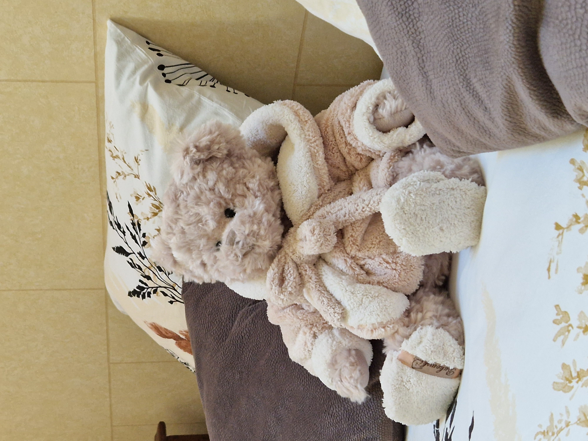

Arrivée à 17h00 - Départ à 10h00
Gîte de caractère 4/6 personnes, 80m² de surfaces habitables
Ce gîte conserve l’esprit authentique de la région. Il dispose
d’un grand séjour de charme avec une table de ferme et
un petit salon convivial. Un coin cuisine équipée d’un
four, d’un lave-vaisselle, d’une plaque de cuisson et d’un petit
frigidaire. Par un bel escalier en pierre vous accédez à l’étage et ses
deux belles chambres :
- L’une plus grande avec un lit de 160/200.
- L’autre offrant la possibilité de deux lits simples ou d’un lit double
selon vos besoins.
Etage comportant également une salle de douche et des Wc.
Vous accèderez en empruntant un authentique escalier de meunier à une
mezzanine, ce salon vous offrira des instants en famille ou
entre amis avec un canapé lit de deux personnes, un canapé fixe
et ses deux fauteuils. Nous pouvons vous installer un lit bébé sur
demande.
Vous disposez d'une dépendance adjacente avec
lave linge, sèche-linge et
grand combi frigidaire/congélateur.
Le gîte propose de nombreuses activités de loisirs grâce à ses
infrastructures :
- Une salle de sport avec vélo elliptique, tapis de marche, et
divers accessoires de remise en forme (fitness, yoga…).
-
Une piscine couverte et chauffée avec nage à contre courant
partagée avec les propriétaires (discrets par nature ;) ).
- Une Grande terrasse ensoleillée avec cuisine d’été.
- Des Transats et du mobilier d'extérieur.
- Un accès au bois privé du clos.

Pour profiter au maximum de vos vacances, nous nous occupons de tous :
les lits seront faits à votre arrivée, le linge de maison et les
serviettes de bain installés. Seuls les draps de bain pour la piscine
sont à prévoir.
Vous n’aurez plus qu’à déguster le rafraîchissement de bienvenue
mis à votre disposition !
Informations particulières :
Paiement de l’acompte en ligne par virement, le solde à l’arrivée.
Les propriétaires sont disponibles et à votre écoute sans toutefois
être envahissants!
Bon séjour parmi nous !
Caractéristiques
{{ feature.icon }}
{{ feature.nom }}
{{ feature.icon }}
{{ feature.nom }}
Environs room
{{ item }}
Pour connaître les disponibilités rien
de plus facile :
Il suffie de renseigner votre choix ci dessous, puis de renseigner par la
suite vos coordonnées.